Snippet of:
The Thinking Ladder from What's Our Problem?
by Tim Urban of Wait But Why
(For those of you who already have this book, you can just go directly here: Chapter 1.)
Preface
Please buy Tim's book and support him on Patreon.
Tim is the writer for the blog called Wait But Why. But this time, he published an entire book called "What's Our Problem?: A Self-Help Book for Societies".
The following snippet is from Chapter 1: "The Thinking Ladder" (which proceeds the introduction chapter).
The audiobook version of the chapter is one hour long. But I am only going to share approximately 20 minutes of this entire chapter.
If I could, I would send the full chapter to everyone. But I am 100% running the risk of copyright infringement here. So I don't want to be stealing the work of this author I admire so much. Instead, I want to support him. And hopefully sharing only a tasty snippet of the chapter is enough of a teaser to get you to go read the full chapter yourself… and then of course the rest of the book as well.
Even more tasty things you're missing out on if you don't go read this chapter:
- why moths inanely fly toward light
- the constant "tug-of-war" in our heads
- the roommates in your brain: "the Primitive Mind" and "the Higher Mind"
- why you buy/eat Skittles
- how the "tug-of-war" is a spectrum that maps to the four rungs of "the Ladder"
- how our thinking is often intertwined with the people we surround ourselves with
- what "Intellectual Culture" means
- what an "Idea Lab" is
- how "Echo Chambers" work
- what the "Emergence Tower" is
- how "Giants" build Intellectual Culture
- how "Genies" (High-Rung Giants) cultivate Idea Labs
- how "Golems" (Low-Rung Giants) cultivate Echo Chambers
- how Golems rely on the "Us vs. Them" mindset
- … and so on and so forth
So, as I was saying, please go purchase the book for yourself.
…
Alright, let's go!
Play the audio and read along!
The Thinking Ladder
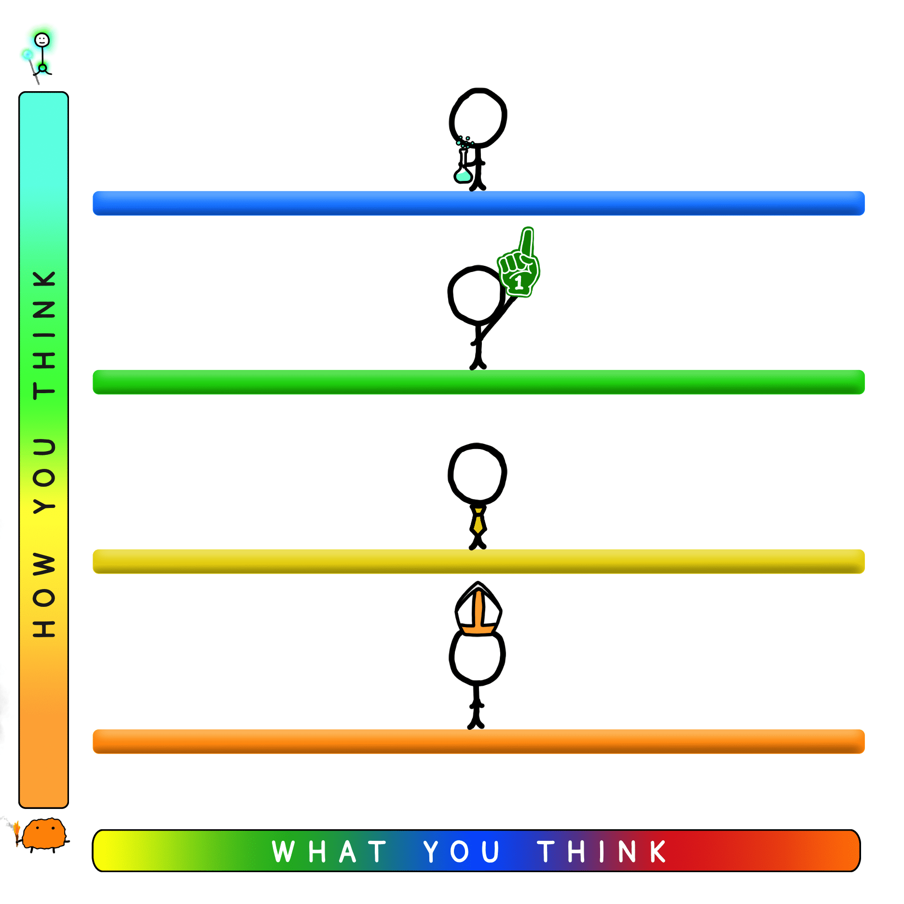Vertical Thinking
Why do we believe what we believe?
Our beliefs make up our perception of reality, drive our behavior, and shape our life stories. History happened the way it did because of what people believed in the past, and what we believe today will write the story of our future. So it seems like an important question to ask: How do we actually come to believe the things we end up believing?
To explore this question, let's create a way to visualize it.
When it comes to our beliefs, let's imagine the range of views on any given topic as an axis we can call the Idea Spectrum.
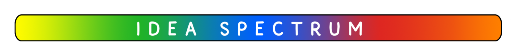The Idea Spectrum is a simple tool we can use to capture the range of what a person might think about any given topic—their beliefs, their opinions, their stances.
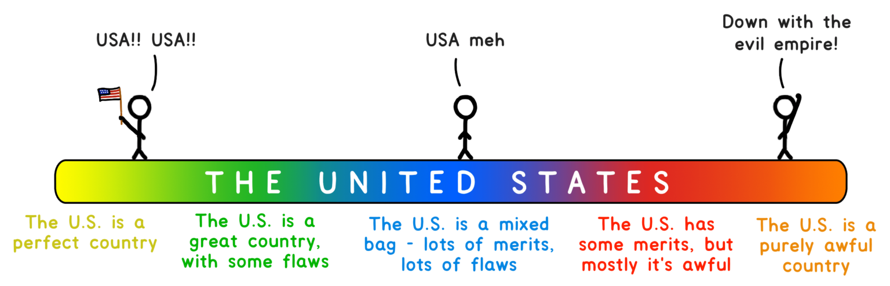For most beliefs, we're so concerned with where people stand that we often forget the most important thing about what someone thinks: how they arrived at what they think. This is where the Ladder can help. If the Idea Spectrum is a "what you think" axis, we can use the Ladder as a "how you think" axis.
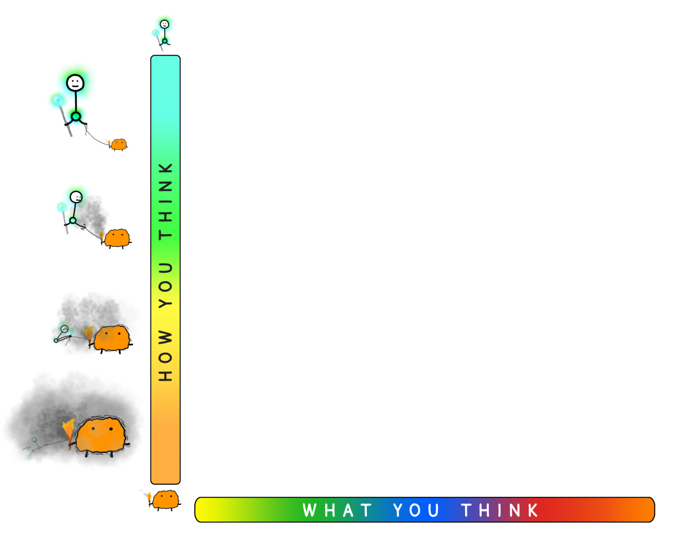To understand how our thinking changes depending on where we are on the Ladder, we have to ask ourselves: how do the two minds like to form beliefs?
→ From David: Since you haven't read the part of the book that explains "the two minds", just quickly try to think of "the Higher Mind" as the version of you that is operating from your highest state of awareness and "the Primitive Mind" as the version of you that is quite driven by basic physiological and instinctual motives and lacks a greater awareness and understanding of the many factors and systems at play in life, the universe, and everything. "The Higher Mind is the part of you that can think outside itself and self-reflect and get wiser with experience." Whereas the Primitive Mind is the part of you that doesn't realize how your neurology, neurochemistry, hormones, thoughts, memories, emotions, associations, environment, experiences, socialization, acculturation, genetics, biology, etc are all influencing you in each moment; its lack of awareness and understanding leads to your mind being totally implicated and identified with each feeling that emerges in your consciousness.
Your Higher Mind is aware that humans are often delusional, and it wants you to be not delusional. It sees beliefs as the most recent draft of a work in progress, and as it lives more and learns more, the Higher Mind is always happy to make a revision. Because when beliefs are revised, it's a signal of progress—of becoming less ignorant, less foolish, less wrong.
Your Primitive Mind disagrees. For [it], what's important is holding beliefs that generate the best kinds of survival behavior—whether or not those beliefs are actually true. The Primitive Mind's beliefs are usually installed early on in life, often based on the prevailing beliefs of your family, peer group, or broader community. The Primitive Mind sees those beliefs as a fundamental part of your identity and a key to remaining in good standing with the community around you. Given all of this, the last thing the Primitive Mind wants is for you to feel humble about your beliefs or interested in revising them. It wants you to treat your beliefs as sacred objects and believe them with conviction.
So the Higher Mind's goal is to get to the truth, while the Primitive Mind's goal is confirmation of its existing beliefs. These two very different types of intellectual motivation exist simultaneously in our heads. This means that our driving intellectual motivation—and, in turn, our thinking process—varies depending on where we are on the Ladder at any given moment.
In the realm of thinking, then, the Ladder's four rungs correspond to four ways of forming beliefs. When your Higher Mind is running the show, you're up on the top rung, thinking like a Scientist.
Rung 1: Thinking Like A Scientist
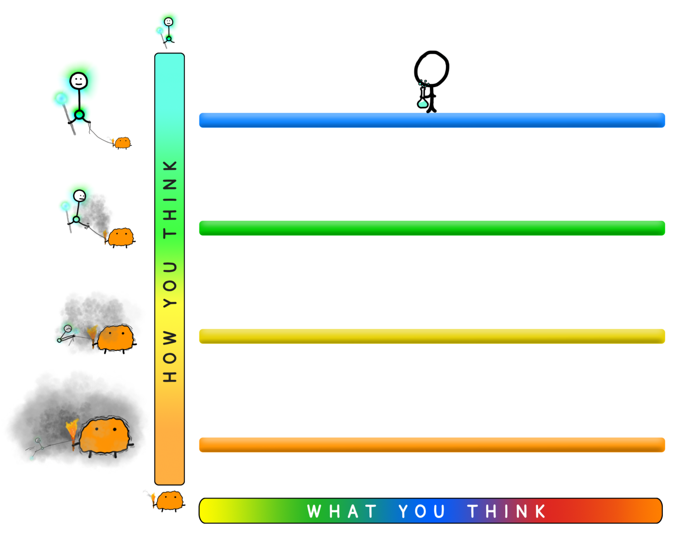When you're thinking like a Scientist, you start at Point A and follow evidence wherever it takes you.
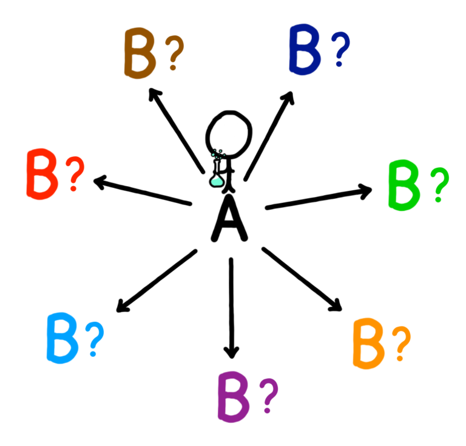More specifically, the Scientist's journey from A to B looks something like this:
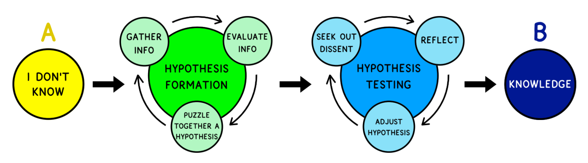The Scientist's default position on any topic is "I don't know." To advance beyond Point A, they have to put in effort, starting with the first stage: hypothesis formation.
Hypothesis Formation
Top-rung thinking forms hypotheses from the bottom up. Rather than adopt the beliefs and assumptions of conventional wisdom, you puzzle together your own ideas, from scratch. This is a three-part process:
#1.) Gather Information
In order to puzzle, you need pieces. Each of us is constantly flooded with information, and we have severely limited attention to allot. In other words, your mind is an exclusive VIP-only club with a tough bouncer.
But when Scientists want to learn something new, they try to soak up a wide variety of information on the topic. The Scientist seeks out ideas across the Idea Spectrum, even those that seem likely to be wrong—because knowing the range of viewpoints that exist about the topic is a key facet of understanding the topic.
#2.) Evaluate Information
If gathering info is about quantity, evaluating info is all about quality.
There are instances when a thinker has the time and the means to collect information and evidence directly—with their own primary observations, or by conducting their own studies. But most of the info we use to inform ourselves is indirect knowledge: knowledge accumulated by others that we import into our minds and adopt as our own. Every statistic you come across, everything you read in a textbook, everything you learn from parents or teachers, everything you see or read in the news or on social media, every tenet of conventional wisdom—it's all indirect knowledge.
That's why perhaps the most important skill of a skilled thinker is knowing when to trust.
Trust, when assigned wisely, is an efficient knowledge-acquisition trick. If you can trust a person who actually speaks the truth, you can take the knowledge that person worked hard for—either through primary research or indirectly, using their own diligent trust criteria—and "photocopy" it into your own brain. This magical intellectual corner-cutting tool has allowed humanity to accumulate so much collective knowledge over the past 10,000 years that a species of primates can now understand the origins of the universe.
But trust assigned wrongly has the opposite effect. When people trust information to be true that isn't, they end up with the illusion of knowledge—which is worse than having no knowledge at all.
So skilled thinkers work hard to master the art of skepticism. A thinker who believes everything they hear is too gullible, and their beliefs become packed with a jumble of falsehoods, misconceptions, and contradictions. Someone who trusts no one is overly cynical, even paranoid, and limited to gaining new information only by direct experience. Neither of these fosters much learning.
The Scientist's default skepticism position would be somewhere in between, with a filter just tight enough to consistently identify and weed out bullshit, just open enough to let in the truth. As they become familiar with certain information sources—friends, media brands, articles, books—the Scientist evaluates the sources based on how accurate they've proven to be in the past. For sources known to be obsessed with accuracy, the Scientist loosens up the trust filter. When the Scientist catches a source putting out inaccurate or biased ideas, they tighten up the filter and take future information with a grain of salt.
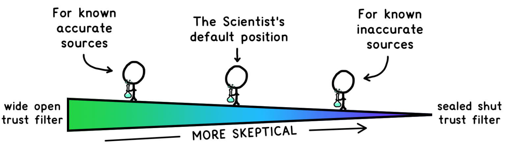When enough information puzzle pieces have been collected, the third stage of the process begins.
#3.) Puzzle Together A Hypothesis
The gathering and evaluating phases rely heavily on the learnings of others, but for the Scientist, the final puzzle is mostly a work of independent reasoning. When it's time to form an opinion, their head becomes a wide-open creative laboratory.
Scientists, so rigid about their high-up position on the vertical How You Think axis, start out totally agnostic about their horizontal position on the What You Think axis. Early on in the puzzling process, they treat the Idea Spectrum like a skating rink, happily gliding back and forth as they explore different possible viewpoints.
As the gathering and evaluating processes continue, the Scientist grows more confident in their puzzling. Eventually, they begin to settle on a portion of the Idea Spectrum where they suspect the truth may lie. Their puzzle is finally taking shape—they have begun to form a hypothesis.
Hypothesis Testing
Imagine I present to you this boxer, and we have this exchange:
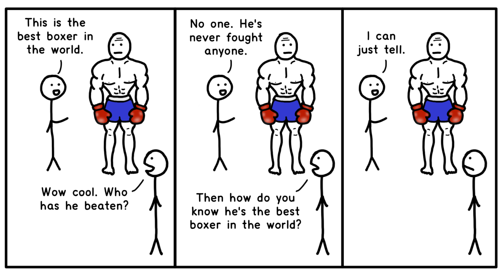You'd think I was insane.
But people do this with ideas all the time. They feel sure they're right about an opinion they've never had to defend—an opinion that has never stepped into the ring. Scientists know that an untested belief is only a hypothesis—a boxer with potential, but not a champion of anything.
So the Scientist starts expressing the idea publicly, in person and online. It's time to see if the little guy can box.
In the world of ideas, boxing opponents come in the form of dissent. When the Scientist starts throwing ideas out into the world, the punches pour in.
Biased reasoning, oversimplification, logical fallacies, and questionable statistics are the weak spots that feisty dissenters look for, and every effective blow landed on the hypothesis helps the Scientist improve their ideas. This is why Scientists actively seek out dissent. As organizational psychologist Adam Grant puts it in his book Think Again:
I've noticed a paradox in great scientists and superforecasters: the reason they're so comfortable being wrong is that they're terrified of being wrong. What sets them apart is the time horizon. They're determined to reach the correct answer in the long run, and they know that means they have to be open to stumbling, backtracking, and rerouting in the short run. They shun rose-colored glasses in favor of a sturdy mirror.
The more boxing matches the Scientist puts their hypothesis through, the more they're able to explore the edges of their conclusions and tweak their ideas into crisper and more confident beliefs.
With some serious testing and a bunch of refinements under their belt, the Scientist may begin to feel that they have arrived at Point B: knowledge.
It's a long road to knowledge for the Scientist because truth is hard. It's why Scientists say "I don't know" so often. It's why, even after getting to Point B in the learning process, the Scientist applies a little asterisk, knowing that all beliefs are subject to being proven wrong by changing times or new evidence. Thinking like a Scientist isn't about knowing a lot, it's about being aware of what you do and don't know—about staying close to this dotted line as you learn:
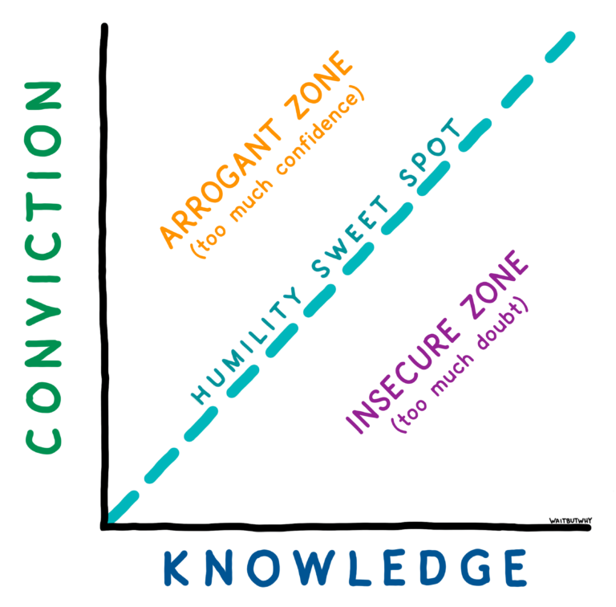When you're thinking like a Scientist—self-aware, free of bias, unattached to any particular ideas, motivated entirely by truth and continually willing to revise your beliefs—your brain is a hyper-efficient learning machine.
But the thing is—it's hard to think like a Scientist, and most of us are bad at it most of the time. When your Primitive Mind wakes up and enters the scene, it's very easy to drift down to the second rung of our Ladder—a place where your thinking is caught up in the tug-of-war.
Rung 2: Thinking Like A Sports Fan
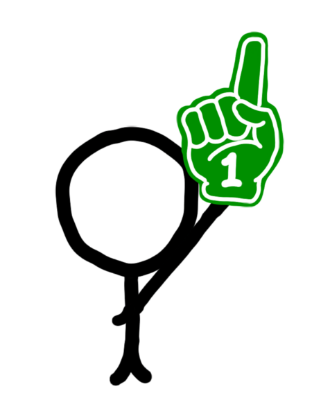Most real-life sports fans want the games they watch to be played fairly. They don't want corrupt referees, even if it helps their team win. They place immense value on the integrity of the process itself. It's just…that they really, really want that process to yield a certain outcome. They're not just watching the game—they're rooting.
When your Primitive Mind infiltrates your reasoning process, you start thinking the same way. You still believe you're starting at Point A, and you still want Point B to be the truth. But you're not exactly objective about it.
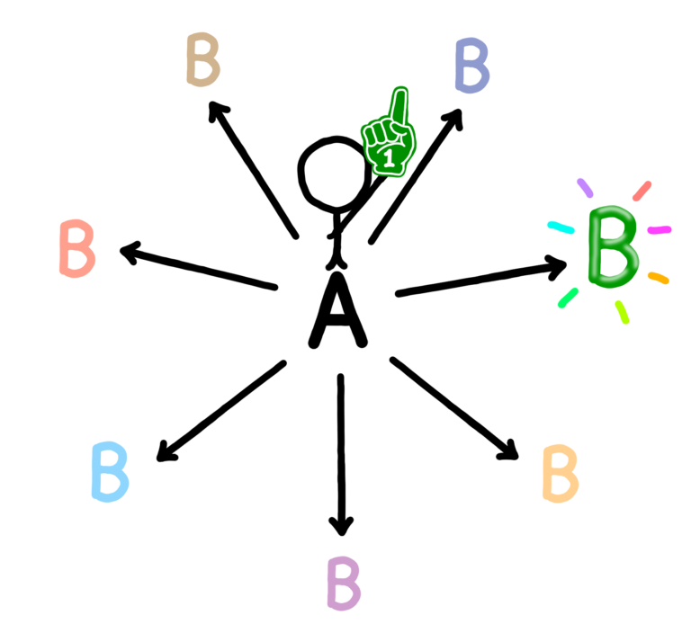Weird things happen to your thinking when the drive for truth is infected by some ulterior motive. Psychologists call it "motivated reasoning." I like to think of it as Reasoning While Motivated—the thinking equivalent of drunk driving. As the 6th century Chinese Zen master Seng-ts'an explains:
If you want the truth to stand clear before you, never be for or against. The struggle between "for" and "against" is the mind's worst disease.
When you're thinking like a Sports Fan, Seng-ts'an and his apostrophe and his hyphen are all mad at you, because they know what they're about to see—the Scientist's rigorous thinking process corrupted by the truth-seeker's most treacherous obstacle:
Confirmation bias.
Confirmation bias is the invisible hand of the Primitive Mind that tries to push you toward confirming your existing beliefs and pull you away from changing your mind.
You still gather information, but you may cherry-pick sources that seem to support your ideas. With the Primitive Mind affecting your emotions, it just feels good to have your views confirmed, while hearing dissent feels irritating.
You still evaluate information, but instead of defaulting to the trust filter's middle setting, you find yourself flip-flopping on either side of it, depending less on the proven track record of the source than on how much the source seems to agree with you:
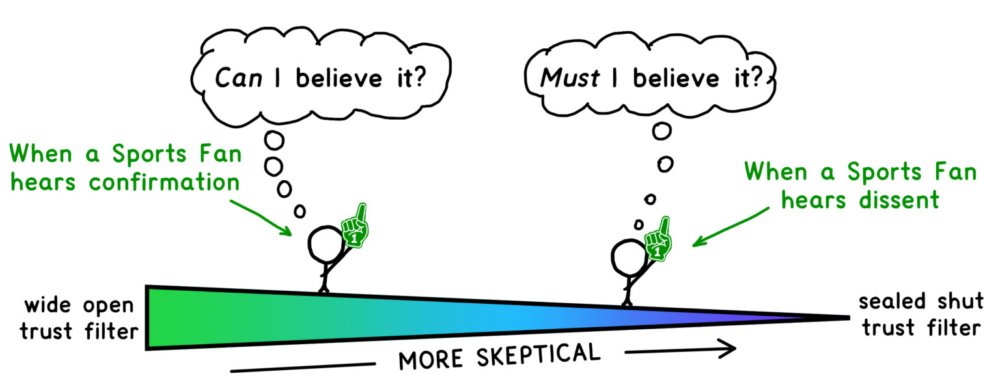So the puzzle pieces collected in the Sports Fan's head are skewed toward confirming a certain belief, and this is then compounded by a corrupted puzzling process. Compelling dissent that does make it into a Sports Fan's head is often forgotten about and left out of the final puzzle.
When it's time to test the hypothesis, the Sports Fan's bias again rears its head. If you were thinking like a Scientist, you'd feel very little attachment to your hypothesis. But now you watch your little machine box as a fan, wearing its jersey. It's Your Guy in the ring. And if it wins an argument, you might even catch yourself thinking, "We won!"
When a good punch is landed on your hypothesis, you're likely to see it as a cheap shot or a lucky swing or something else that's not really legit. And when your hypothesis lands a punch, you may have a tendency to overrate the magnitude of the blow or the high level of skill it involved.
Being biased skews your assessment of other people's thinking too. You believe you're unbiased, so someone actually being neutral appears to you to be biased in the other direction, while someone who shares your bias appears to be neutral.
As this process wears on, it's no surprise that the Sports Fan often ends up just where they were hoping to—at their preferred Point B.
On this second rung of the Ladder, the hyper-optimized learning machine that is the Scientist's brain has become hampered by a corrupting motivation. But despite learning less than the Scientist, the Sports Fan usually feels a little more confident about their beliefs.
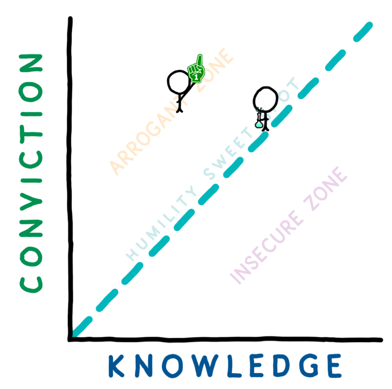Sports Fans are stubborn, but they're not hopeless. The Higher Mind is still a strong presence in their head, and if dissenting evidence is strong enough, the Sports Fan will grudgingly change their mind. Underneath all the haze of cognitive bias, Sports Fans still care most about finding the truth.
Drift down any further, though, and you cross the Ladder midpoint and become a different kind of thinker entirely. Down on the low rungs, the Primitive Mind has the edge in the tug-of-war. Whether you'll admit it or not (you won't), the desire to feel right, and appear right, has overcome your desire to be right. And when some other motivation surpasses your drive for truth, you leave the world of intellectual integrity and enter a new place.
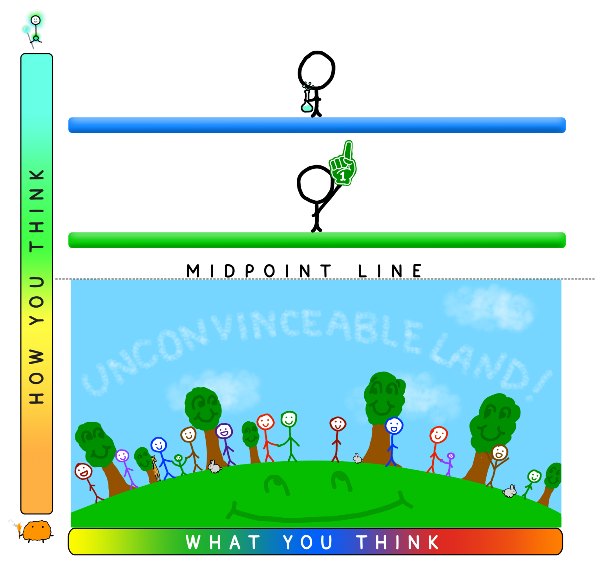Unconvinceable Land is a world of green grass, blue sky, and a bunch of people whose beliefs can't be swayed by any amount of evidence. When you end up here, it means you've become a disciple of some line of thinking—a religion, a political ideology, the dogma of a subculture. Either way, your intellectual integrity has taken a backseat to intellectual loyalty.
As we descend into Unconvinceable Land, we hit the Ladder's third rung.
Rung 3: Thinking Like An Attorney
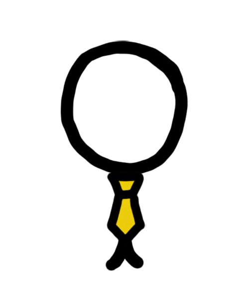An Attorney and a Sports Fan have things in common. They're both conflicted between the intellectual values of truth and confirmation. The critical difference is which value, deep down, they hold more sacred. A Sports Fan wants to win, but when pushed, cares most about truth. But it's as if an Attorney's job is to win, and nothing can alter their allegiance.
Because would this be a good attorney?
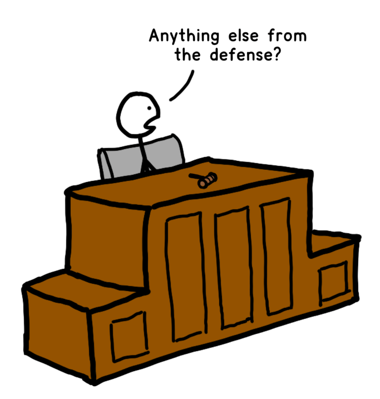 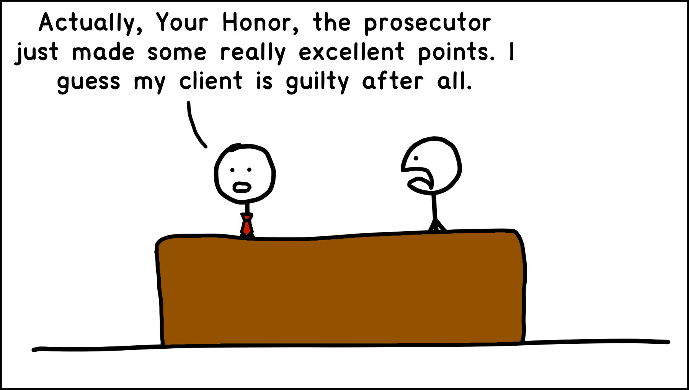No, it wouldn't. An Attorney is on a team, period.
When you're thinking like an Attorney, you don't start at Point A at all. You start at Point B. The client is not guilty. Now let's figure out why.
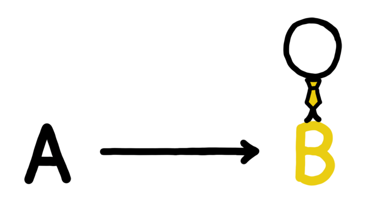From there you'll go through your due diligence, cherry-picking evidence and piecing together an argument that leads right where you want it to.
This isn't a criticism of real-world attorneys. In an actual courtroom, the attorney's way of thinking makes sense—because each attorney's case is only half of what will be presented to the jury. Real-world attorneys know that the best way for the system to yield truth is for them to make the best possible case for one side of the story. But on our Ladder, the cognitive Attorney's head is like a courtroom with only one side represented—in other words, a corrupt courtroom where the ruling is predetermined.
The Attorney treats their preferred beliefs not like an experiment that can be revised, or even a favorite sports team, but like a client. Motivated reasoning becomes obligated reasoning, and the gathering, evaluating, and puzzling processes function like law associates whose only job is to help build the case for Point B.
If someone really wants to believe something—that the Earth is flat, that 9/11 was orchestrated by Americans, that the CIA is after them—the human brain will find a way to make that belief seem perfectly clear and irrefutable. For the Attorney, the hypothesis formation stage is really a belief-strengthening process. They inevitably end up with the same viewpoints they started with, now beefed up with a refreshed set of facts and arguments that remind them just how right they are.
In the hypothesis testing phase, the Attorney's refusal to genuinely listen to a dissenter, combined with a bag of logical fallacy tricks and their strong sense of conviction, ensures that they're an absolutely infuriating person to argue with. The Attorney's opponents will feel like they're arguing with a brick wall, and by the end, it'll be clear that nothing they could have said—nothing whatsoever—would have made the Attorney say, "Hmm that's a good point. I need to think about that. Maybe I'm wrong."
The result of thinking like an Attorney is that your brain's incredible ability to learn new things is mostly shut down. Even worse, your determination to confirm your existing beliefs leaves you confident about a bunch of things that aren't true. Your efforts only make you more delusional. If there's anything you can say about Attorney thinking, it's that it at least acknowledges the concept of the knowledge-building process. When you're thinking like an Attorney, you're unconvinceable, but you're not that big an internal shift away from high-rung thinking. From somewhere in the periphery of your mind, the voice of the Higher Mind still carries some weight. And if you can learn to listen to it and value it, maybe things can change.
But sometimes, there are beliefs that your Primitive Mind holds so dear that your Higher Mind has no influence at all over how you think about them. When dealing with these topics, ideas and people feel inseparable and changing your mind feels like an existential threat. You're on the bottom rung.
Rung 4: Thinking Like A Zealot
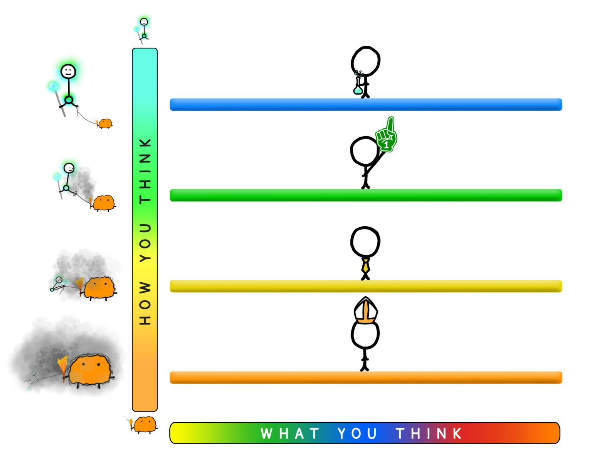Imagine you've just had your first baby. Super exciting, right?
And every day when you look at your baby, you can't believe how cute it is.
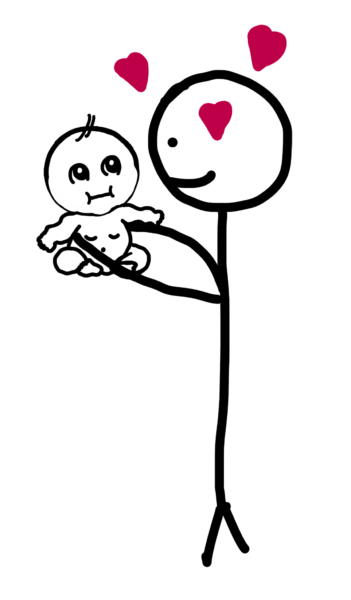Just like no parent has to research whether their baby is lovable, the Zealot doesn't have to go from A to B to know their viewpoints are correct—they just know they are. With 100% conviction.
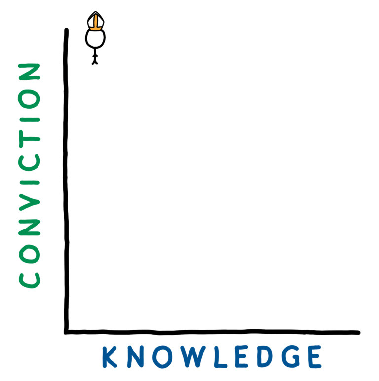Likewise with skepticism. If someone told you your actual baby was super cute, you wouldn't assess their credibility, you'd be in automatic full agreement. And if someone told you your baby was an asshole, you wouldn't consider their opinion, you'd just think they were a terrible person.
That's why the Zealot's flip-flop goes from one extreme to the other, with no in between.
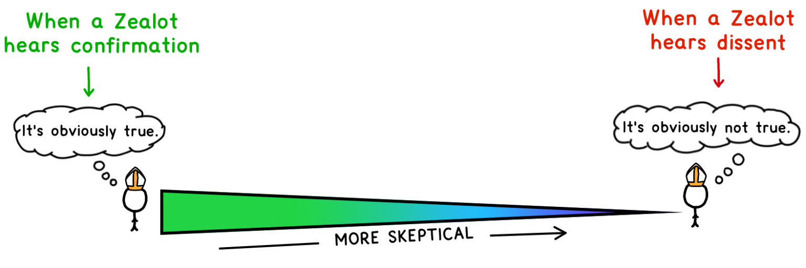When Zealots argue, things can quickly get heated, because for someone who identifies with their ideas, a challenge to those ideas feels like an insult. It feels personally invalidating. A punch landed on a Zealot's idea is a punch landed on their baby.
When the Primitive Mind is overactive in our heads, it turns us into crazy people. On top of making us think our ideas are babies, it shows us a distorted view of ourselves.
And it shows us a distorted view of the world. While the Scientist's clear mind sees a foggy world, full of complexity and nuance and messiness, the Zealot's foggy mind shows them a clear, simple world, full of crisp lines and black-and-white distinctions. When you're thinking like a Zealot, you end up in a totally alternative reality, feeling like you're an omniscient being in total possession of the truth.
High-Rung Thinking, Low-Rung Thinking
The four thinking rungs are all distinct, but they fall into two broad categories: high-rung thinking (Scientist and Sports Fan) and low-rung thinking (Attorney and Zealot).
High-rung thinking is independent thinking, leaving you free to revise your ideas or even discard them altogether. But when there's no amount of evidence that will change your mind about something, it means that idea is your boss. On the low rungs, you're working to dutifully serve your ideas, not the other way around.
High-rung thinking is productive thinking. The humility of the high-rung mindset makes your mind a permeable filter that absorbs life experience and converts it into knowledge and wisdom. On the other hand, the arrogance of low-rung thinking makes your mind a rubber shell that life experience bounces off of. One begets learning, the other ignorance.
We all spend time on the low rungs, and when we're thinking this way, we don't realize we're doing it. We believe our conviction has been hard-earned. We believe our viewpoints are original and based on knowledge. Because as the Primitive Mind's influence grows in our heads, so does the fog that clouds our consciousness. This is how low-rung thinking persists.
Each of us is a work in progress. We'll never rid our lives of low-rung thinking, but the more we evolve psychologically, the more time we spend thinking from the high rungs and the less time we spend down below. Improving this ratio is a good intellectual goal for all of us.
But this is just the beginning of our journey. Because individual thinking is the center of a much larger picture. We're social creatures, and as with most things, the way we think is often intertwined with the people we surround ourselves with.
…
Note from David
Technically, I feel somewhat at ease with sharing this portion of the book with friends, because, at one time, I was sending people links to Tim's published public article on this very topic.
Tim began releasing the book as a series of articles on his blog. But then he realized that he needed to just turn it into a proper book. So he took the articles off of the site a week or so before he published (~Feb 2023). Hence why you see the link to the article is only saved in the "Wayback Machine" internet archive.
… So, I guess I'm defending my case and trying to say that this content was kind of already in the public domain, in some sense…? And technically anyone is welcome to go to the internet archive "Wayback Machine" and retrieve these articles which later became chapters of his book.
But rather than continually try to defend my partially illegal activity here, I should just keep reiterating to you that you should in fact go support Tim and buy the book in whichever format you prefer.